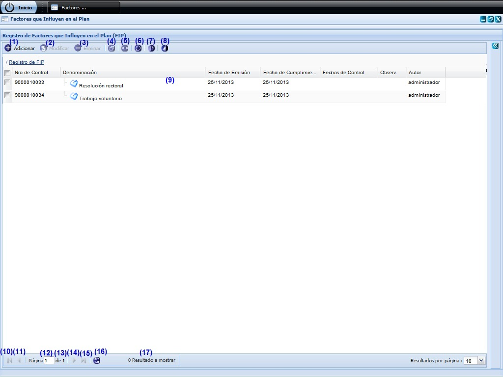
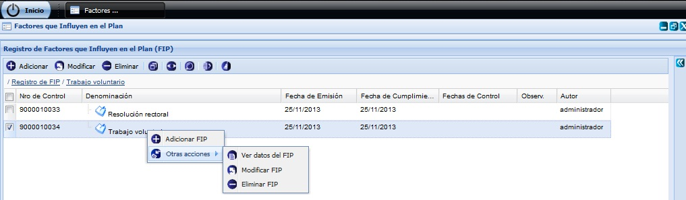
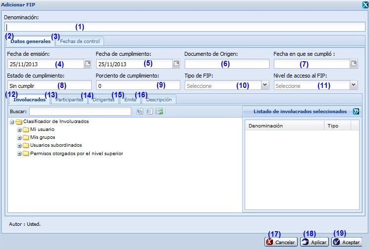
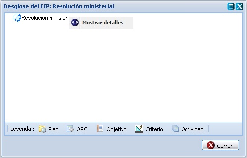
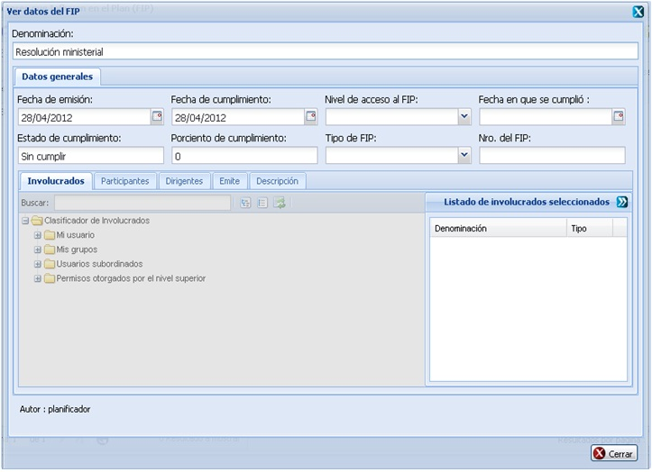
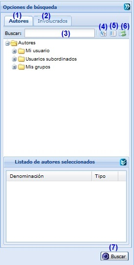

--FACTORES QUE INFLUYEN EN EL PLAN--
Esta funcionalidad permite realizar la configuración de Factores que Influyen en el Plan (FIP) necesarias para la gestión de planificación de actividades. Para acceder a estas funcionalidades el usuario debe estar autenticado y debe seleccionar la ruta: Inicio/Planificación/Planificación de actividades/Configuración/ Factores que Influyen en el Plan, ver Figura 1.

Figura 1. Interfaz y acciones de la funcionalidad FIP.

Figura 2. Operaciones con FIP a través dé clic secundario.
Las diferentes opciones que conforman la figura 1 permiten:
- Adicionar FIP, ver Acápite Adicionar FIP, esta acción permite adicionar los datos del nuevo FIP, cuando se presione el botón Aceptar o Aplicar de la interfaz el sistema mostrará un mensaje de información notificando que se adicionó la actividad.
- Modificar un FIP previamente seleccionada en el listado. Se mostrará la interfaz con los datos cargados, posibilitando que se modifiquen los que se requieran. La validación de cada uno de los campos de la interfaz será muy similar al descrito en el Acápite Adicionar FIP. En caso de seleccionar la opción Modificar y no hacer cambios en la información referente al FIP seleccionado se debe mostrar un mensaje. Este botón estará deshabilitado hasta tanto no se haya seleccionado un FIP.
- Eliminar un FIP previamente seleccionado en el listado. Esta acción permite eliminar el(los) FIP(s), una vez seleccionado(s) el(los) mismo(s) se procede a seleccionar la opción Eliminar de la interfaz, automáticamente se mostrará un mensaje de confirmación, que se puede Aceptar o Cancelar según sea el caso, de presionar la opción Aceptar el sistema le mostrará un mensaje de información sobre el éxito de la operación realizada, quedando eliminado(s) el(los) FIP(s) seleccionado(s), si cancela el mensaje de confirmación, el sistema permanece en la interfaz principal y no elimina el(los) FIP(s).Inicialmente la opción Eliminar de la interfaz estará deshabilitado hasta tanto no se haya seleccionado al menos un FIP.
- Desglosar FIP, ver acápite Desglosar FIP. Inicialmente la opción Desglosar FIP de la interfaz estará deshabilitado hasta tanto no se haya seleccionado el FIP del que se desea consultar su desglose.
- Gestionar observaciones al FIP, consultar acápite Gestionar observaciones al FIP referido a la descripción de las operaciones que se pueden realizar con las observaciones. Inicialmente la opción Gestionar observaciones al FIP de la interfaz estará deshabilitado hasta tanto no se haya seleccionado el FIP a gestionar una observación.
- Búsqueda avanzada, ver Acápite Búsqueda avanzada, esta acción permite buscar una actividad entre las actividades adicionadas en el sistema.
- Obtener reporte.
- Limpiar filtro(s). Esta acción limpiará todos los criterios de búsqueda, deshabilitando los filtros realizados.
- Se muestra el listado de FIP.
- Ir a la primera página, mostrando los primeros FIP.
- Ir a la página anterior.
- Mostrar el número de la página donde se encuentra, se puede introducir el número de la página a la que se desea ir.
- Mostrar el número máximo de páginas.
- Ir a la siguiente página.
- Ir a la última página.
- Actualizar el listado de FIP.
- Mostrar la cantidad de resultados encontrados.
Adicionar FIP
Se presiona el botón Adicionar de la interfaz, ver opción (1) de la figura 1. Inmediatamente aparecerá una ventana donde se podrán especificar los datos relacionados con el FIP que se desea adicionar, ver Figura 3.

Figura 3. Interfaz Adicionar FIP.
Las opciones de la figura anterior permiten:
- Introducir la denominación del FIP que desea insertar.
- Seleccionar la pestaña donde se gestionan los datos generales del FIP.
- Seleccionar la pestaña donde podrá gestionar las fechas de control.
- Seleccionar la fecha de emisión.
- Seleccionar la fecha de cumplimiento.
- Introducir el documento de origen.
- Seleccionar la fecha en que se cumplió.
- El estado de cumplimiento el sistema lo determinará a partir del valor registrado en porciento de cumplimiento.
- Introducir el porciento de cumplimiento que presentará el FIP a insertar.
- Seleccionar el Tipo de FIP.
- Seleccionar el Nivel de acceso al FIP.
- Seleccionar la pestaña donde se podrá seleccionar los involucrados en el nuevo FIP una vez que haya desplegado el árbol jerárquico que se muestra.
- Seleccionar la pestaña donde podrá especificar quienes participarán en la actividad.
- Seleccionar la pestaña donde podrá especificar quienes serán los responsables de la actividad.
- Seleccionar la pestaña donde podrá especificar quién ordeno esta orden o indicación.
- Seleccionar la pestaña para ingresar la descripción detallada de la actividad.
- Cancelar las acciones y salir de la interfaz sin guardar los datos.
- Guardar los datos y limpiar los campos de la interfaz, permitiendo adicionar otro FIP.
- Adicionar los datos del FIP al listado y cerrar la interfaz.
Validación de los campos:
- El campo Denominación es obligatorio, en caso de dejar este campo vacío y presionar los botones Aceptar o Aplicar el sistema le notificará el error, subrayando el campo en rojo y mostrando un mensaje de error, al pasar el cursor del mouse por encima del campo subrayado, y el mensaje de error “Por favor verifique hay campo(s) vacío(s)”. Este campo acepta caracteres alfanuméricos y los caracteres especiales (“%#@!*() _;:,?-.). Al escribir otro tipo de carácter no permitido notificará subrayando el campo en rojo y mostrando un mensaje de error.
- En el campo Porciento de cumplimiento solo podrá ingresar números entre los valores de 0 a 100. En caso de que ocurra el sistema debe mostrar el siguiente mensaje: “El valor máximo es de 100.”
- El campo Descripción podrá ser una combinación de letras, números y caracteres que describa al FIP a crear y podrá completarse o no, a consideración del usuario.
Desglosar FIP
Se presiona el botón Desglosar FIP de la interfaz, ver opción 4 de la figura 1. Inmediatamente aparecerá una ventana donde se podrán especificar los datos relacionados con el FIP a desglosar, ver Figura 4. El desglose del FIP consiste en un listado jerárquico de los elementos de la planificación con los que se encuentra relacionado. La ventana está provista de una Leyenda con el significado de los íconos mostrados en el desglose. Para cerrar la ventana Desglose del FIP dé clic sobre el botón Cerrar. No será posible modificar los datos mostrados en el Desglose del FIP.

Figura 4. Interfaz Desglose del FIP.
Nota: Si desea mostrar detalles de un FIP insertado, procede a seleccionar el FIP y selecciona mediante clic secundario (derecho) la opción Mostrar detalles, ver figura 4. Una vez presionada dicha opción el sistema le mostrara la interfaz Ver datos del FIP, ver figura 5. En esta interfaz podrá conocer los datos del elemento seleccionado, estos datos no se permite modificarlos. Dicha interfaz de consulta se puede cerrar dando clic sobre el botón Cerrar que aparece en la parte inferior derecha.

Figura 5. Interfaz Ver datos del FIP.
Búsqueda avanzada de FIP(s)
Para efectuar una búsqueda avanzada de un FIP en específico, debe seleccionar la opción Búsqueda avanzada de la figura 1, luego de presionado el mismo, el sistema le mostrará la interfaz Opciones de búsqueda donde tendrá que tener en cuenta los siguientes pasos: ver Figura 6.

Figura 6. Interfaz Búsqueda avanzada.
Las diferentes opciones que conforman la figura anterior permiten:
- Seleccionar pestaña de Autores.
- Seleccionar pestaña de Involucrados.
- Introducir el criterio de búsqueda para buscar FIP. Esta acción permite buscar un FIP en específico a partir del criterio introducido. Luego de introducido el criterio de búsqueda se muestra el autor o involucrado que cumple con los datos especificados. En caso de que no exista un autor o involucrado que coincida con el criterio de búsqueda especificado no se obtendrá ninguna respuesta.
- Expande todos los autores.
- Colapsa todos los autores.
- Refrescar todos los autores.
- Realizar la búsqueda en el árbol de autores o involucrados en dependencia de la pestaña seleccionada.
Gestionar observaciones al FIP
Se presiona el botón Gestionar observaciones de la interfaz, ver opción 5 de la figura 1. Inmediatamente aparecerá una ventana donde se podrán especificar los datos relacionados con el FIP que se le desea gestionar una observación, ver Figura 7.

Figura 7. Interfaz Registro de observaciones.
Las opciones de la figura anterior permiten:
- Adicionar observaciones, ver Acápite Adicionar observaciones, esta acción permite adicionar observaciones al FIP.
- Eliminar una observación previamente seleccionada en el listado de observaciones del FIP. Esta acción permite eliminar la(s) observación(es) deseada(s), una vez seleccionada(s) la(s) misma(s) se procede a seleccionar la opción Eliminar de la interfaz, automáticamente se mostrará un mensaje de confirmación, que se puede Aceptar o Cancelar según sea el caso, de presionar la opción Aceptar el sistema le mostrará un mensaje de información sobre el éxito de la operación realizada, quedando eliminada(s) la(s) observación(es) seleccionada(s), si cancela el mensaje de confirmación, el sistema permanece en la interfaz Registro de observaciones y no elimina la(s) observación(es). Inicialmente la opción Eliminar de la interfaz estará deshabilitado hasta tanto no se haya seleccionado la(s) observación(es) a eliminar.
- Mostrar listado de observaciones del FIP.
- Cuando se presione el botón Cerrar de la interfaz el sistema mostrará en el FIP seleccionado el campo de Observaciones activo si adicionó alguna observación al FIP seleccionado.
Adicionar observaciones
Se presiona el botón Adicionar observaciones de la interfaz, ver opción 1 de la figura 7. Inmediatamente aparecerá una ventana donde se podrán especificar las observaciones del FIP, ver Figura 8.

Figura 8. Interfaz Adicionar observación.
Las opciones de la figura anterior permiten:
- Introducir el asunto de la observación que desea insertar al FIP.
- Introducir la observación del FIP. Este dato no es obligatorio.
- Cancelar las acciones y salir de la interfaz sin guardar los datos.
- Adicionar los datos de la observación y cerrar la interfaz. El sistema mostrará un mensaje de información notificando que se adicionó la observación al FIP.
Validación de los campos:
- El campo Asunto es obligatorio, en caso de dejar este campo vacío y presionar los botones Aceptar o Aplicar el sistema le notificará error, subrayando el campo en rojo y mostrando un mensaje de error, al pasar el cursor del mouse por encima del campo subrayado, y el mensaje de error “Por favor verifique hay campo(s) vacío(s)”. Este campo acepta caracteres alfanuméricos y algunos caracteres especiales (“%#@!*() _;:,?-.). Al escribir otro tipo de carácter no permitido notificará subrayando el campo en rojo y mostrando un mensaje de error. Por último debe saber que no es posible adicionar una nueva observación con el mismo asunto de otra que ya está registrado en el sistema, de suceder esto el sistema le notificará con un mensaje de error.
- El campo Observación puede ser vacío y admite cualquier tipo de caracteres de longitud infinita.